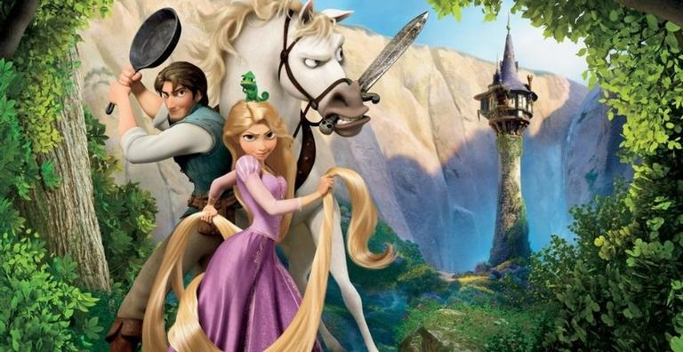

Flynn Ryder (Zachary Levi/Luciano Huck) é o bandido mais procurado e sedutor do reino. Um dia, em plena fuga, ele se esconde em uma torre. Lá conhece Rapunzel (Mandy Moore), uma jovem prestes a completar 18 anos que tem um enorme cabelo dourado, de 21 metros de comprimento. Rapunzel deseja deixar seu confinamento na torre para ver as luzes que sempre surgem no dia de seu aniversário. Para tanto, faz um acordo com Flynn. Ele a ajuda a fugir e ela lhe devolve a valiosa tiara que tinha roubado. Só que a mamãe Gothel (Donna Murphy), que manteve Rapunzel na torre durante toda a sua vida, não quer que ela deixe o local de jeito nenhum.
